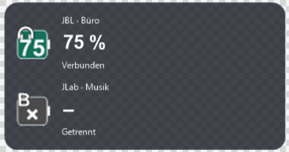
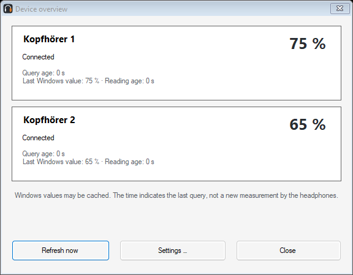
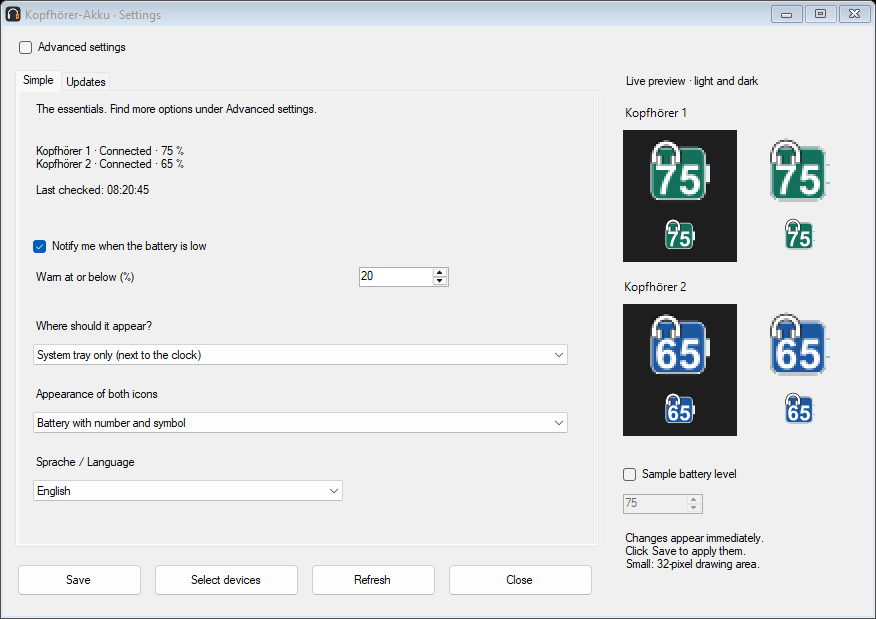

Kopfhörer-Akku
БЕЗКОШТОВНО · ВІДКРИТИЙ КОД · WINDOWS 10 / 11
Ваші навушники. Заряд завжди на видноті.
Переглядайте заряд до двох Bluetooth-навушників біля годинника Windows, у віджеті на робочому столі або в обох місцях. Невелика програма від Aldikiller.
Інсталятор і портативний ZIP · П’ять мов · Без реклами й телеметрії
Приклад віджета; назви й мову можна змінити.Огляд за 35 секунд
Демонстрація екранів версії 1.4.0: пристрої, прості налаштування, оформлення та віджет. Приклади даних, не вимірювання наживо. Відео англійською, без звуку.
Завантажити відео (MP4)

Огляд пристроїв (англійською)
Прості налаштування (англійською)На ваш смак
Змінюйте назви, кольори, символи, шрифти й форму батареї. Попередній перегляд показує зміни перед збереженням.
Вчасні сповіщення
Сповіщення про низький заряд, необов’язковий запуск разом із Windows і добровільна перевірка оновлень. Оновлення не встановлюються автоматично.
Змінити мову
Відкрийте Einstellungen → Allgemein → Sprache / Language, виберіть Українська й натисніть Speichern. Інтерфейс зміниться одразу, а вибір збережеться. Типова мова — німецька.
Встановлення
Завантажте інсталятор або повністю розпакуйте портативний ZIP. Увімкніть навушники, підключіть їх до Windows і виберіть до двох пристроїв у програмі. Якщо записи дублюються, виберіть запис із рівнем заряду.
Віджет і налаштування
Подвійне клацання значка відкриває налаштування, праве — меню. У Відображення й віджет виберіть трей, віджет або обидва. Змініть розмір, положення, прозорість, шрифти й розташування. Для прозорого тла встановіть непрозорість тла й товщину контуру на нуль.
Вимоги й обмеження
Windows 10 від збірки 19041 або Windows 11, x64, з .NET Framework 4.8. Відображаються лише дані, надані Windows і драйвером. Перевірено з JBL Live 770NC та JLab Rewind 2. Інші моделі ще не підтверджено. Значення можуть надходити із затримкою. Файли поки не мають цифрового підпису. Windows може показати попередження.
Допомога
Якщо пристрою немає, перевірте підключення Windows, виберіть його знову й дочекайтеся наступної перевірки. Шукайте приховані значки під ^ біля годинника. Сповіщення потребують підтвердженого з’єднання; режим Не турбувати може їх приховувати.
Приватність і ліцензія
Без реклами й телеметрії. Налаштування залишаються на вашому комп’ютері. Необов’язкову перевірку оновлень типово вимкнено. Під час її використання GitHub отримує IP-адресу й версію програми, але не назви пристроїв чи рівні заряду. Відкритий код за ліцензією MIT, без гарантій у межах, дозволених законом.
Видалення
Видаліть встановлену версію через Параметри Windows → Програми. Налаштування залишаються в %LOCALAPPDATA%\KopfhoererAkku. Для портативної версії вимкніть автозапуск, закрийте програму й видаліть її папку.
Вкажіть модель навушників, версії Windows і програми та кроки відтворення проблеми. Не публікуйте Bluetooth-адреси чи приватні дані.
Нове у версії 1.4.0
Один клік на значку акумулятора в області сповіщень відкриває огляд обох навушників. Подвійний клік відкриває налаштування. Кожен пристрій має окремий час запиту. Після відключення попередні значення позначаються як неактуальні. Програма повторює запити після виходу зі сну, розблокування та змін з’єднання Bluetooth. Windows може кешувати рівень заряду: час указує останній запит до Windows, а не підтверджене нове вимірювання навушниками.